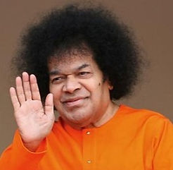

North Dallas Sai Center is a 501(c)(3) non-profit organization. The center provides a forum to learn and practice the teachings of Sri Sathya Sai Baba. Learning, devotion, as well as service, are promoted through various activities.
Our spiritual education program for children is based on the teachings of Sri Sathya Sai Baba. This is dedicated to making sure that children start their journey with God. All classes take place every Sunday morning lasting throughout the school year as well as presentations and service projects.